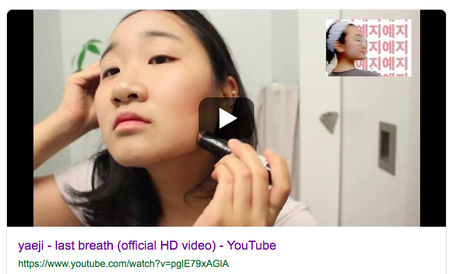
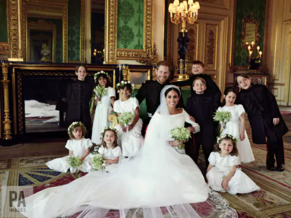
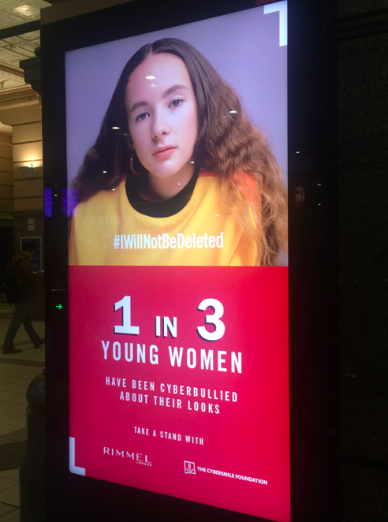
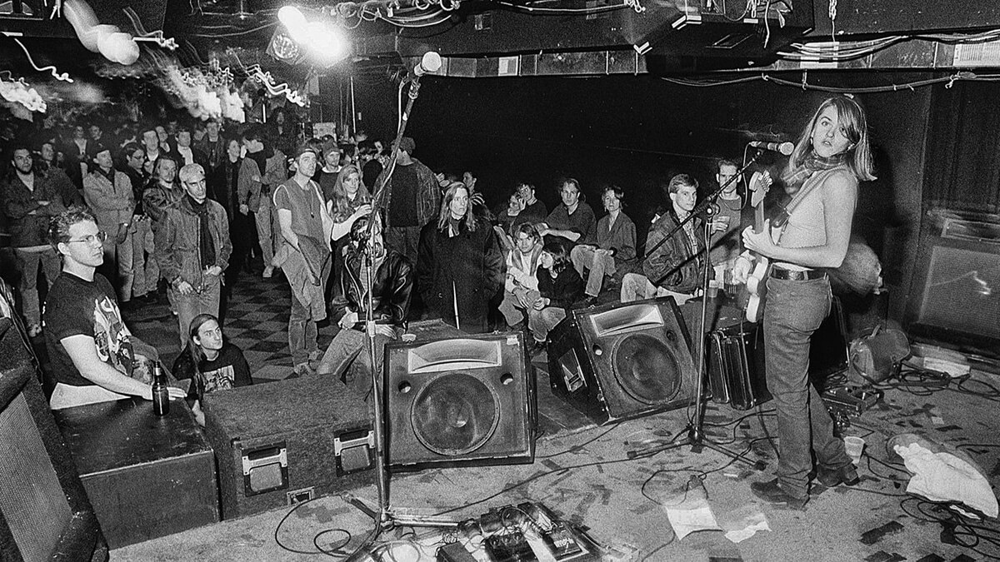
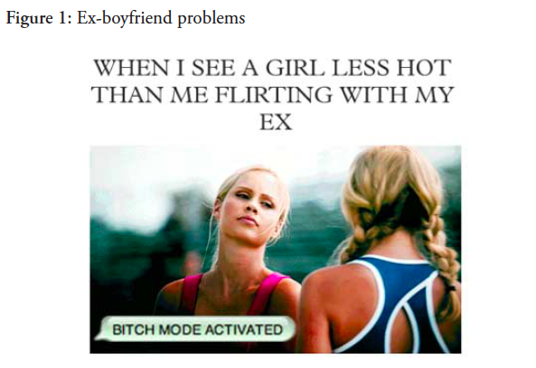
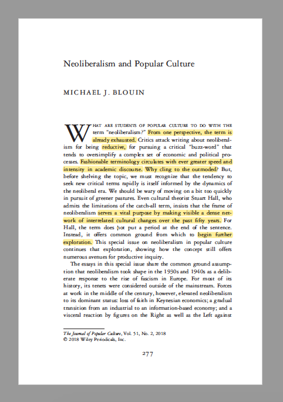
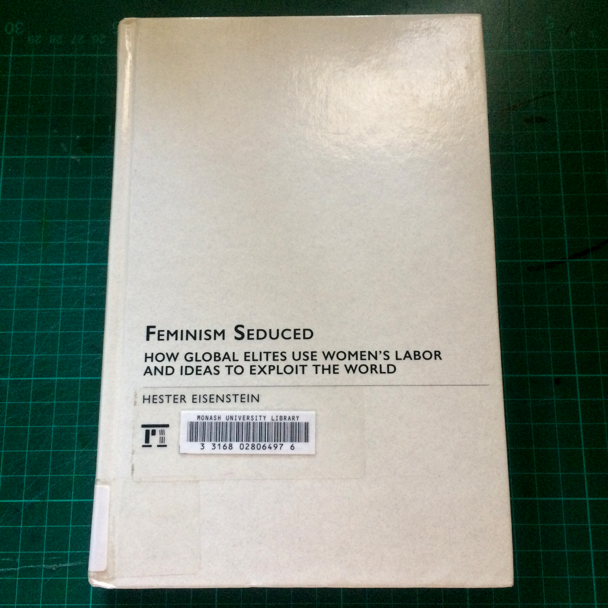

Welcome to Selena's archive. Here is where I will share the articles, books, websites and blogs I am currently reading. I also hope to add interviews, imagery and experiments as I go. Please email selenarepanis@gmail.com to contribute or respond to this archive. Thank-you!
YAEJI
Entry: 11:30am. Thursday 23rd May, 2019
Type: Video
Title: Yaeji "Last Breath"
Review: Kathy Yaeji Lee, New York via Seoul music producer is making some great things. She has rosen in popularity within the past two years or so. A music video she released last year has been on my mind since she released it. Last Breath doubles as a music video and a make-up tutorial. Rapping in Korean, she jokes about make up products being masks for bigger existential or personal issues such as dysphoria and anxiety. She applies facemasks and contours her face, using a mix of American and K-Beauty techniques.
Hazel Cills [Jezebel] wrote an article about the music video. She explains to Cills, “The lyrics were paired with the tutorial to convey how these differing makeup methods are all the same in the end—they’re a way for us to cover up what we want to hide.”
A Passage:
“This product is called Depression and it stays on for 24 hours.”
The artefact: https://www.youtube.com/watch?v=pglE79xAGlA

ROTTENBERG
Entry: 11:02am. Thursday 23rd May, 2019
Type: Article
Title: How neoliberalism colonised feminism – and what you can do about it
Review: Catherine Rottenberg's analysis of Neoliberal Feminism, posted on The Conversation in 2018 is a perfect analysis of neoliberal feminism. I admire her exploration of the topic - I think it is written so coherently and perfectly captures a pretty confusing subject. She looks into everything from post-feminism, social justice and individualism.
A Passage:
Neoliberal feminism focuses on “individual women’s empowerment and choice, while simultaneously denying that socioeconomic and cultural structures shape our lives.”
The artefact: https://bit.ly/2sn1PuW

#IWillNotBeDeleted
Entry: 9:00pm. Tuesday, 10th April, 2019
Type: A billboard depicting an advertisement, spotted in Flinders Street Train Station.
Title: #IWillNotBeDeleted
Review: I came across this billboard the other day when I was meeting a friend. I did a double take and then went back to photograph it. Rimmel London and The Cybersmile Foundation have come together to create the campaign #IWillNotBeDeleted. This was the perfect example of my honours project.. a campaign designed to dismantle cyber bullying, providing no real solution asides from "buy more make-up!"
A Passage:
Here, the girl pictured is co.nventionally quite beautiful. The girl looks very vulnerable, and the audience is told that she is the subject of cyberbullying. Girls are the subject of innumerable cultural artefacts and are commonly used as a symbol in contemporary art to “question the stability of identity.” A cosmetics brand teaming up with a cyberbullying activist project feeling like an inherent contradiction and a complete remove from reality. The neoliberal agenda!
The artefact:

TIQQUN
Entry: 5:59pm. Wednesday, 3 April 2019
Type: Book
Title: Preliminary Materials For a Theory of the Young-Girl
Review: This is one of my favourite books ever, although I have only added it to my archive now. Theory of the Young-Girl does not speak of a literal young girl, but rather utilises the language sold to young girls through fashion magazines and media, and provokes the learned desire to self-brand and commodify oneself. I am amazed by the way it is typeset and the tone of which it is written and I believe it to be a huge inspiration for my design practise.
A Passage:
This book is full of brilliant, crystallised parts, some typeset in Curlz or Papyrus, and each as inflammatory as the next. "The Young-Girl becomes demonetised when she goes out of circulation. When she loses the possibility of re-entering the marketplace, she begins to rot."
The central idea is that the Young-Girl is a product defined by her ability to charm, sell, and stun. Tiqqun interrogates the notion of young femininity and affirms that a huge part of it is it the ability to perform correctly. This reminds me of Judith Butler's theory of performative gender and how it is ever-changing. Unfortunately every PDF I find of this book online does not have the crazy typesetting I am so in awe of which is really sad.
The artefact:

THEA BALLARD
Entry: 11:37pm. Friday, 22 March 2019
Type: Essay published on the web
Title: Girls' Room
Review: After our class on Monday, Liz Luby told me I should read this article, I assume partly because we had seen Liz Phair play live together a couple weeks prior, but also because it fit in with where my research was headed. I read it that night! (Thanks Liz Luby). Thea Ballard writes about the authenticity of Liz Phair's music, and the effect her legacy has had on recent early 20s female musicians making "bedroom" pop.
Liz Phair's Girlysound music was vulnerable, messy, juvenile and extremely, self depreciatingly, feminine.
It seems as though Liz Phair has paved the way for artists such as Soccer Mommy (who opened for Phair's show recently), Snail Mail (who gets compared to Phair constantly), and even people like Mitski (who can barely be called a Bedroom artist anymore due to her huge success.)
A Passage:
"We call it bedroom pop, but if intimate space and our transmissions from within it are so professionalized, is there even a proverbial bedroom to make music from anymore?"
This part in particular resonated with me. The bedroom has always been a space in which young girls might feel most safe, as it acts as their haven and cocoon. The genre of Bedroom Pop has become commodified to now signify something unprofessional, DIY, even though it may be the oppposite, is extremely bizarre.
The artefact: https://goo.gl/mgAqLa

AKANE KANAI
Entry: 11:24am. Friday, 22 March 2019
Type: Article from Journal
Title: The Girl In The GIF: Reading the Self into Girlfriendship
Review: I loved this!! Kanai writes about girlhood with a great respect for the culture young girls co-create. Her whole PHD is centered around girlhood and being online, and this specific essay positioned reading as an active, social, and affective act.
A Passage: I enjoyed rethinking the idea of reading and the productivity of being online. I have spent a huge amount of my life online, and often (what often felt like) wasted away reblogging, looking at content, and curating feeds.
Kanai speaks about the unique nature of the "reading" that young girls do each day online, and the assertion of the self into another "gendered social imaginary" that takes place on sites like Tumblr. Specifically referring to the blog WhatShouldWeCallMe, she repositions something thought of as passive, into something productive and affective.
The artefact: https://goo.gl/EoXZtk

MICHAEL J. BLOUIN
Entry: 6:48pm. Sunday, 17 March 2019
Type: Article from Journal
Title: Neoliberalism and Popular Culture
Review: This article was really interesting as the writer speaks directly to how students of popular culture are confused by the usage of the word Neoliberalism. And really, same! I liked how he described the word as a product of buzzword culture and that it is an "already exhausted" term. This was also a great take on academia and terminology - why use words that no one knows the meaning of?
A Passage: Buzzwords are symptomatic of the neoliberal era, and the word “neoliberalism” could be said to be a product of circulating tricky terminology in academic circles.
To be put in simple terms, Neoliberalism refers to the effect of the past 50 years’ capitalism in culture and economics.
The artefact:

HESTER EISENSTEIN
Entry: 6:45pm. Sunday, 17 March 2019
Type: Book
Title: Feminism Seduced: How Global Elites Use Women's Labor And Ideas To Exploit The World
Review: This text is a lot less about culture than I originally had hoped, and more about the history of feminism and labor (which is also insightful). I came across this text after reading Eva Chen's Neoliberalism and Popular Women's Culture, as Eisenstein was referenced.
A Passage: I have not managed to read the whole thing, and unsure if I will as it is only lightly about aesthetics. However, here is something I picked up from my read today:
We have seen a shift from labor feminism, to mainstream feminism. The popularisation of feminism has been achieved, yet today’s feminism is less about embracing social change and more about aesthetics, which ultimately spells its obsoleteness.
Because of this proliferation of feminist ideologies, there are numerous types of feminism, including socialist feminism, neoliberal feminism and radical feminism to name a few. For this reason, many people now refer to “feminisms” as a plural, as these ideologies are extremely different.
The artefact:
